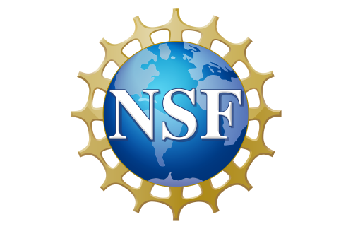

Sep–Dec 2026
First Solar
Thin Film Material Development Intern · Perrysburg, OH
PVD coating development and metrology analysis for perovskite solar-cell materials.

I’m a Chemical Engineering student at Oregon State University working on nuclear materials, energy systems, and experimental hardware.


Sep–Dec 2026
Thin Film Material Development Intern · Perrysburg, OH
PVD coating development and metrology analysis for perovskite solar-cell materials.
Jun–Aug 2026


NSF-supported research internship
Research Intern · University of Idaho / Idaho State University / Idaho National Laboratory
High-temperature molten-salt testing, post-test characterization, and power-failure and overtemperature safety-system work.
Sep 2025–Present

Research Assistant
Graphite specimen preparation, testing-fixture development, nuclear-material characterization, and tungsten laser notching. Additional characterization work includes UO₂ fission-gas-release research using STA, SEM, and XRD.
Oct 2025–Present
Research Assistant
Thermochemical storage experiments and reactor development; successful $4,000 research proposal.
Oct 2024–Jun 2025
Civil Engineering Intern
AutoCAD standard details, GIS measurements, inspections, residential plan reviews, field surveys, and traffic-safety analysis.
 FLiNaK corrosion of LPBF 316LInternships
FLiNaK corrosion of LPBF 316LInternships Laser notching for tungsten fracture testsResearch
Laser notching for tungsten fracture testsResearch Stable crack propagation in nuclear graphiteResearch
Stable crack propagation in nuclear graphiteResearch Carbon Reduction ResearchResearch
Carbon Reduction ResearchResearch Civil Engineering InternshipInternships
Civil Engineering InternshipInternships